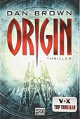

| # |
Autor |
Serie |
Titel |
Format |
Seiten |
Erscheinungsdatum |
Verlag |
Genre |
| 15 |
Rick Barba |
|
God Of War |
Gebundene Ausgabe |
352 |
Apr. 2018 |
DK/Prima Games |
Handbooks and manuals |

God Of War Rick Barba
ISBN: 9780744018189
ListPrice: EUR 25,99
Ausgabe: Collectors
Hinzugefügt am: 02.11.2018
Zusammenfassung: A guide to the video game provides information on its controls, tips, walkthroughs, and strategies.
Themen
Handbooks Manuals Etc, God of war (Game)
|
| 16 |
Mario Barth |
|
Langenscheidt Deutsch - Frau / Frau - Deutsch: Schnelle Hilfe für den ratlosen Mann |
Taschenbuch |
128 |
Sept. 2004 |
Langenscheidt |
Mundart & Humor |
Langenscheidt Deutsch - Frau / Frau - Deutsch: Schnelle Hilfe für den ratlosen Mann Mario Barth
ISBN: 9783468731228
ListPrice: EUR 9,95
Maße: 0.47 x 5.83 x 3.94 in
Wertung: 3.0 (124 Stimmen)
Hinzugefügt am: 03.12.2008
Zusammenfassung: Dieses Buch ist ein echter Lachknüller! Es eignet sich perfekt als Geschenk für verschiedene Anlässe...
Beim Lesen wurde ich stark an den Flirtratgeber "Angriffsziel: Frau!" von Christian Haas erinnert. Dieses zwar inhaltlich sehr ernst zu nehmende Werk ist jedoch von der sprachlichen Gestaltung ein ähnlich starker Angriff auf meine Lachmuskeln gewesen...
Der Humor von "Deutsch-Frau" kommt zwar nicht ganz so trocken daher. Trotzdem in jedem Fall ein klarer Kauf!
Themen
Dictionaries, Humour, Familie, Ehe, Liebe, Partnerschaft, Freundschaft, Frau, German, HC/Sachbücher/Lexika, Nachschlagewerke/Deutsche Wörterbücher, Partnerschaft, Beziehungen, Frau; Humor, Language
|
| 17 |
Tim Bogenn |
|
Assassin's Creed Origins |
Gebundene Ausgabe |
352 |
Jan. 2017 |
DK/Prima Games |
Handbooks and manuals |
Assassin's Creed Origins Tim Bogenn
ISBN: 9780744018615
ListPrice: EUR 23,99
Ausgabe: Collectors
Hinzugefügt am: 02.11.2018
Zusammenfassung:
Themen
Ouvrages illustrés, Art par ordinateur, Assassin's Creed (Jeu)
|
| 18 |
Tim Bogenn |
|
Assassin's Creed Syndicate - Das offizielle Lösungsbuch |
Broschiert |
|
Jan. 2015 |
DK/Prima Games |
Handbooks and manuals |
Assassin's Creed Syndicate - Das offizielle Lösungsbuch Tim Bogenn
Hinzugefügt am: 04.11.2018
Zusammenfassung: Assassin's Creed Syndicate Collector's Edition - Das offizielle Lösungsbuch
Themen
|
| 19 |
Marion Zimmer Bradley |
|
Die Nebel von Avalon |
Taschenbuch |
1117 |
Mai 1999 |
Fischer (Tb.), Frankfurt |
Romane & Erzählungen |
Die Nebel von Avalon Marion Zimmer Bradley
ISBN: 9783596282227
ListPrice: EUR 9,90
Ausgabe: 27., Aufl.
Maße: 1.89 x 7.60 x 4.88 in
Wertung: 4.5 (230 Stimmen)
Hinzugefügt am: 09.11.2008
Zusammenfassung: Als ich nach den "Nebeln von Avalon" suchte, fand ich dieses Angebot aus der so genannten "Bild Bestseller Bibliothek". Diese kannte ich bereits und hatte mich bisweilen immer geweigert ein Buch aus dieser Reihe zu kaufen. Da ich aber noch Student bin und sparen musste, ließ ich mich dazu hinreißen ( wegen des Preises ) mir diesen Band zu bestellen...
Ich habe noch nie ein Buch gelesen, in dem so viele Fehler steckten. Da taucht ständig "haften" anstatt "hatten" auf, das es sich gelohnt hätte diesen Fehler mit zu zählen. Punkte und Komma an den unsinnigsten Stellen und Namen werden mal so, mal so geschrieben... Ich bin wirklich kein Erbsenzähler, aber bei dieser Häufung macht es keinen Spaß ein Buch zu lesen.
Allen, die dieses Buch sich zu legen wollen, kann ich nur raten, legt ein paar Euro drauf und kauft euch eine Ausgabe von einem anderen Verlag!
"Die Nebel von Avalon" ist eine geniale Fantasy-Geschichte, die einen beim lesen nicht mehr los lässt.
Genau das Richtige für lange Herbstabende!
Also "Bild dir deine Meinung" und kauf dir das Buch, aber nicht aus der "Bild Bestseller Bibliothek".
Themen
Science Fiction, Amerikanische Belletristik, Fantasy, TB/Belletristik/Fantasy, Belletristik, Artus (Tafelrunde), Romane/Erzählungen/Sagen, Science Fiction/Fantasy
|
| 20 |
Peter V. Brett |
Dämonenzyklus |
1 - Das Lied der Dunkelheit |
Taschenbuch |
800 |
Mai 2009 |
Heyne Verlag |
Fantasy |

1 - Das Lied der Dunkelheit Peter V. Brett
ISBN: 9783453524767
ListPrice: EUR 15,00
Maße: 2.44 x 8.11 x 5.28 in
Serie: Dämonenzyklus
Hinzugefügt am: 15.12.2011
Zusammenfassung: Roman. Deutsche Erstausgabe
Erscheinungsjahr: 2009
Dtsch. Übers. v. Ingrid Herrmann-Nytko
Gewicht: 808 gr / Abmessungen: 206 mm x 135 mm
Von Brett, Peter V. / Übersetzt v. Herrmann-Nytko, Ingrid
"Weit ist die Welt - und dunkel" - und in der Dunkelheit lauert die Gefahr. Das muss der junge Arlen auf bittere Weise selbst erfahren. Schon seit Jahrhunderten haben Dämonen, die sich des Nachts aus den Schatten erheben, die Menschheit zurückgedrängt. Das einzige Mittel, mit dem die Menschen ihre Angriffe abwehren können, sind die magischen Runenzeichen. Als Arlens Mutter bei solch einem Dämonenangriff umkommt, flieht er aus seinem Heimatdorf. Er will nach Menschen suchen, die den Mut noch nicht aufgegeben und das Geheimnis um die alten Kriegsrunen noch nicht vergessen haben. "Das Lied der Dunkelheit" ist ein eindringliches, fantastisches Epos voller Magie und Abenteuer. Es erzählt die Geschichte eines Jungen, der einen hohen Preis bezahlt, um ein Held zu werden. Und es erzählt die Geschichte des größten Kampfes der Menschheit - der Kampf gegen die Furcht und die Dämonen der Nacht.
Episch und düster - die faszinierendste Weltenschöpfung der letzten Jahre.
Pressestimmen:
»Das Lied der Dunkelheit ist phänomenal! Ein großartiger Abenteuerroman, ein Lied über wahres Heldentum.« Charlaine Harris
Leseprobe:
Das große Horn dröhnte. Arlen hielt in seiner Arbeit inne, hob den Kopf und blickte auf den zart lavendelfarbenen Morgenhimmel. Nebelschwaden hingen noch in der Luft und brachten einen feuchten, beißenden Geruch mit sich, der dem Jungen nur allzu vertraut war. Eine dumpfe Furcht breitete sich in seinen Eingeweiden aus, während er regungslos in der morgendlichen Stille stand und angespannt wartete, noch voller Hoffnung, er habe sich den Klang des Horns
Themen
|
| 21 |
Peter V. Brett |
Dämonenzyklus |
2 - Das Flüstern der Nacht |
Taschenbuch |
1008 |
Aug. 2010 |
Heyne Verlag |
Fantasy |

2 - Das Flüstern der Nacht Peter V. Brett
ISBN: 9783453526112
ListPrice: EUR 16,00
Maße: 2.60 x 8.11 x 5.35 in
Serie: Dämonenzyklus
Hinzugefügt am: 15.12.2011
Zusammenfassung:
Themen
|
| 22 |
Peter V. Brett |
Dämonenzyklus |
3 - Die Flammen der Dämmerung |
Taschenbuch |
1056 |
März 2013 |
Heyne Verlag |
Fantasy |
3 - Die Flammen der Dämmerung Peter V. Brett
ISBN: 9783453524743
ListPrice: EUR 15,99
Maße: 8.11 x 5.43 x 2.52 in
Serie: Dämonenzyklus
Hinzugefügt am: 12.04.2013
Zusammenfassung:
Themen
|
| 23 |
Peter V. Brett |
Dämonenzyklus |
4 - Der Thron der Finsternis |
Broschiert |
1024 |
Sept. 2015 |
Heyne Verlag |
Fantasy |
4 - Der Thron der Finsternis Peter V. Brett
ISBN: 9783453315730
ListPrice: EUR 16,99
Maße: 20.7 x 13.6 x 6.0 cm
Serie: Dämonenzyklus
Hinzugefügt am: 26.11.2015
Zusammenfassung:
Themen
|
| 24 |
Peter V. Brett |
Dämonenzyklus |
5 - Das Leuchten der Magie |
Broschiert |
656 |
Dez. 2017 |
Heyne Verlag |
Fantasy |
5 - Das Leuchten der Magie Peter V. Brett
ISBN: 9783453315747
Maße: 20.5 x 14.2 x 5.5 cm
Serie: Dämonenzyklus
Hinzugefügt am: 13.12.2017
Zusammenfassung:
Themen
|
| 25 |
Peter V. Brett |
Dämonenzyklus |
6 - Die Stimmen des Abgrunds |
Softcover |
558 |
Apr. 2018 |
Heyne Verlag |
Fantasy |
6 - Die Stimmen des Abgrunds Peter V. Brett
ISBN: 9783453319387
ListPrice: £17.36
Serie: Dämonenzyklus
Hinzugefügt am: 04.11.2018
Zusammenfassung: Broschiertes Buch
Nach Das Leuchten der Magie ist Die Stimmen des Abgrunds der packende zweite Teil des fünften Bandes von Peter V. Bretts Dämonensaga, der im Original unter dem Titel The Core erschienen ist. Der letzte Krieg zwischen Menschen und Dämonen steht unmittelbar bevor, und die einzige Hoffnung der Menschheit ruht nun auf Arlen, seiner Frau Renna und seinem Rivalen Jardir. Denn nur, wenn es ihnen gelingt, den Willen eines der mächtigen Dämonenprinzen zu brechen und ihn zu zwingen, sie in den Abgrund zu führen, werden sie die dort herangezüchtete Dämonenarmee aufhalten können. Aber noch ist der Sieg gegen die Dämonen nur ein Traum ...
Themen
|
| 26 |
Peter V. Brett |
Dämonenzyklus |
7 - Der Prinz der Wüste |
Broschiert |
1008 |
Okt. 2021 |
Heyne Verlag |
Fantasy |
7 - Der Prinz der Wüste Peter V. Brett
ISBN: 9783453318113
ListPrice: 19,99 €
Ausgabe: Deutsche Erstausgab
Maße: 8.07 x 1.77 x 5.35
Serie: Dämonenzyklus
Hinzugefügt am: 16.12.2021
Zusammenfassung:
Themen
|
| 27 |
Peter V. Brett |
Erzählungen aus Arlens Welt |
1 - Der große Basar |
Taschenbuch |
240 |
Apr. 2010 |
Heyne Verlag |
Fantasy |
1 - Der große Basar Peter V. Brett
ISBN: 9783453527089
ListPrice: EUR 8,95
Maße: 18.8 x 11.8 x 2.1 cm
Serie: Erzählungen aus Arlens Welt
Hinzugefügt am: 26.11.2015
Zusammenfassung: [Taschenbücher ]
Themen
|
| 28 |
Peter V. Brett |
Erzählungen aus Arlens Welt |
2 - Das Erbe des Kuriers |
Taschenbuch |
208 |
Apr. 2015 |
Heyne Verlag |
Fantasy |
2 - Das Erbe des Kuriers Peter V. Brett
ISBN: 9783453316829
ListPrice: EUR 8,99
Maße: 18.8 x 11.8 x 2.2 cm
Serie: Erzählungen aus Arlens Welt
Hinzugefügt am: 26.11.2015
Zusammenfassung: [WieNeu, ohne Mängel, als Geschenk geeignet ]
Themen
|
| 29 |
Peter V. Brett |
Erzählungen aus Arlens Welt |
3 - Selias Geheimnis |
Softcover |
223 |
Jan. 2018 |
Heyne Taschenbuch |
Fantasy |
3 - Selias Geheimnis Peter V. Brett
ISBN: 9783453319707
ListPrice: € 11.72
Serie: Erzählungen aus Arlens Welt
Hinzugefügt am: 03.11.2018
Zusammenfassung:
Themen
|
| 30 |
Peter V. Brett |
Erzählungen aus Arlens Welt |
4 - Das Feuer der Dämonen: Novellen |
Kindle Ausgabe |
544 |
Dez. 2019 |
Heyne Verlag |
Fantasy |
4 - Das Feuer der Dämonen: Novellen Peter V. Brett
ISBN: 9783641250584
Ausgabe: Deutsche Erstausgabe
Serie: Erzählungen aus Arlens Welt
Hinzugefügt am: 19.11.2019
Zusammenfassung: Dämonen sind der Schrecken der Nacht. Doch immer wieder gibt es Menschen, die es wagen, sich diesen Kreaturen in den Weg zu stellen. Einer von ihnen ist der junge Kurier Arlen, der auf seinen Missionen lernt, dass es neben Mut auch neue Ideen braucht, um in dieser gefährlichen Welt zu überleben – und der schon bald als der »Tätowierte Mann« den Menschen neue Hoffnung im Kampf gegen die Dämonen gibt. Denn Arlen ist nicht allein. Manchmal an seiner Seite, manchmal aber auch an entlegenen Orten, stehen Menschen auf und fangen an, sich gegen die Bestien der Nacht zu wehren. Menschen, die füreinander und für mehr Gerechtigkeit eintreten, wie die junge Brianne, wie der Waisenjunge Dorn oder wie Selia, die Dorfsprecherin. Menschen mit einzigartigen Schicksalen …
In »Das Feuer der Dämonen« sind erstmals alle vier Erzählungen des Bestsellerautors Peter V. Brett aus der Welt von »Das Lied der Dunkelheit« versammelt, zusätzlich mit drei bisher unveröffentlichten Bonusgeschichten sowie einem ausführlichen Anhang.
Themen
|
| 31 |
Peter V. Brett |
Erzählungen aus Arlens Welt |
5 - Das Feuer der Dämonen |
Broschiert |
544 |
Dez. 2019 |
Heyne Verlag |
Fantasy |
5 - Das Feuer der Dämonen Peter V. Brett

ISBN: 9783453320536
Ausgabe: Deutsche Erstausgabe
Serie: Erzählungen aus Arlens Welt
Hinzugefügt am: 13.12.2019
Zusammenfassung:
Themen
|
| 32 |
Dan Brown |
|
Diabolus |
Taschenbuch |
528 |
Juni 2007 |
Bastei-Lübbe |
Romane & Erzählungen |

Diabolus Dan Brown
ISBN: 9783404157624
ListPrice: EUR 9,95
Ausgabe: 3., Aufl.
Maße: 1.34 x 7.24 x 4.88 in
Wertung: 2.5 (59 Stimmen)
Hinzugefügt am: 04.06.2009
Zusammenfassung: Das Buch ist das erste geschriebene vom heute sehr berühmten Autor Dan Brown. Im Vergleich zu einem solchen tollen Roman wie "Sakrileg" könnte man dieses hier schon fast als eine Enttäuschung bezeichnen, jedoch erkennt man bei ein wenig Recherche, dass es sich hierbei um ein noch Amateurbuch handelt. Dan Brown schrieb es aus Spaß und veröffentlichte es sogar im Internet - als Lektüre für zwischendurch. Und genauso ein Buch ist es auch. Es ist sehr einfach und spannend zu lesen, flüssig geschrieben und einfach zu verstehen. Außerdem wird fast jedes Kapitel mit einem tollen Cliffhanger abgeschlossen, welcher den Leser zum Weiterlesen praktisch zwingt.
Einige sehr interessante und alltägliche Thesen werden hier von Brown aufgestellt und man macht sich nach dem Lesen tatsächlich Gedanken über unseren heutigen Alltag, nämlich, "wer überwacht die Wächter?".
Auf der anderen Seite weist das Buch einige Unstimmigkeiten auf: von wegen ein Amerikaner hat 1944 den erste Computer erfunden! Es war ein Europäer und es war 1941. Außer dieser hier sind noch andere vorhanden sowie kleine Logikfehler. Auch was die Story angeht, gibt es schwächen. So ist der Bösewicht noch bevor er als solcher im Buch enttarnt wird dem Leser beim genauen Mitdenken klar und auch wie die Geschichte ausgehen wird. Diese Vorhersehbarkeit hinterlässt leider einen etwas faden Beigeschmack. Dennoch kann man sich auf eine oder zwei nette Plot-Wendungen freuen sowie auf nette Charaktere.
Trotz all den Nachteilen ist "Diabolus" ein sehr unterhaltsames Buch geworden, auch wenn es nicht mit Browns späterem Werk "Sakrileg" auch im geringsten mithalten kann. Als Abendlektüre und zum Einmallesen ist das Buch gut geegneit.
Themen
TB/Belletristik/Krimis, Thriller, Spionage, Belletristik, Kriminalromane, Krimis/Thriller, Amerikanische Belletristik, Kriminalroman
|
| 33 |
Dan Brown |
|
Meteor |
Taschenbuch |
640 |
Nov. 2003 |
Bastei-Lübbe |
Romane & Erzählungen |

Meteor Dan Brown
ISBN: 9783404150557
ListPrice: EUR 9,95
Ausgabe: 28., DE
Maße: 1.57 x 7.24 x 4.88 in
Wertung: 3.5 (366 Stimmen)
Hinzugefügt am: 04.06.2009
Zusammenfassung: Der amerikanische Bestsellerautor Dan Brown wuchs in einer Umgebung auf, in der Wissenschaft und Religion, Rationales und Irrationales keine Gegensätze darstellten: Immerhin war er Sohn eines preisgekrönten Mathematikprofessors und einer laut Verlagsinformation "bekannten" Kirchenmusikerin. Bereits der Thriller "Illuminati", in dem ein Schweizer Atomforscher mit seltsamen Gravuren einer Geheimgesellschaft in seinem Labor ermordet gefunden wird, war die Geburt dieser beiden Extreme.
Bei Browns Roman "Meteor" ist das nicht anders. Der titelgebende Gesteinsblock liegt tief in der Arktis verborgen, wo er mithilfe einer High-Tech-Satellitenanlage der Raumfahrtbehörde NASA aufgespürt wird. Anscheinend hat er Spuren außerirdischen Lebens mit ins ewige Eis gebracht. Kein Wunder also, dass der Präsident der USA seine Geheimdienstmitarbeiterin Rachel Sexton zur Fundstelle kommandiert. Aber irgendeine mysteriöse Kraft will mit allen Umständen verhindern, dass die Wahrheit ans Licht kommt und schreckt auch vor Mord nicht zurück. Immerhin befindet sich Sexton an einem "gottverlassenen Ort" mit "vielen Möglichkeiten, zu Tode zu kommen".
Für Freunde von Wissenschaftsthrillern mit einem Touch Science Fiction und spekulativer Dramatik ist Browns "Meteor" ein unbedingtes Muss. Es ist abzusehen, dass das Buch in den Bestsellerlisten ebenso einschlagen wird, wie der außerirdische Gesteinsbrocken in der Arktis. "--Isa Gerck"
Themen
Englische Belletristik, Kriminalroman, Taschenbuch / Belletristik/Krimis, Thriller, Spionage, Belletristik, Kriminalromane, Arktis; Krimis/Thriller, Meteorit; Krimis/Thriller
|
| 34 |
Dan Brown |
Robert Langdon |
1 - Illuminati |
Broschiert |
701 |
Okt. 2008 |
Bastei-Lübbe |
Romane & Erzählungen |
1 - Illuminati Dan Brown
ISBN: 9783404148660
ListPrice: EUR 9,95
Ausgabe: 43., DE
Maße: 1.89 x 7.24 x 4.88 in
Serie: Robert Langdon
Wertung: 4.0 (1499 Stimmen)
Hinzugefügt am: 04.06.2009
Zusammenfassung: Eigentlich könnte Robert Langdon ein langweiliges Leben führen. Denn der Harvardprofessor ist Symbologe mit einem Faible für christliche Zeichenkunst -- da sollte man eigentlich nicht in tödliche Intrigen verstrickt werden. Allerdings ist Langdon vor allem der Held des Bestsellerautors Dan Brown, und der hat sich auf die undurchdringlichen Machenschaften der Kirche im Umfeld des Vatikans (und auf eine ganz besondere Deutung christlicher Kunst im Sinne komplexer Verschwörungstheorien) spezialisiert. In "Illuminati" wird Langdon in eine hoch explosive Geschichte verwickelt, die eng mit dem als ausgestorben geltenden Wissenschafts-Geheimbund der Illuminati aus der Zeit der Renaissance verknüpft zu sein scheint.
Der Papst ist gestorben. Nun sind alle Kardinäle nach Rom gekommen, um einen neuen Stellvertreter Gottes zu wählen. Aber ein wahnsinniger Fanatiker entführt vier der aussichtsreichen Kandidaten, um sie nach und nach in vier Kirchen mit Hilfe der vier Elemente Erde, Luft, Feuer und Wasser umzubringen -- nicht, ohne ihnen ein entsprechendes Brandsymbol der Illuminati auf die Brust zu brennen. Langdon ist der einzige, der den Mörder stoppen kann -- und der gemeinsam mit dem Camerlengo, dem Kammerdiener des verstorbenen Papstes, in der Lage ist, eine Antimaterie-Bombe mit ungeheuerlicher Sprengkraft aufzustöbern, die den Vatikan in Staub verwandeln soll. Gemeinsam mit der Tochter eines ermordeten Physikers macht sich Langdon auf die Suche nach Zeichen der Illuminati an den Kunstwerken im Stadtraum Roms -- bis zum für alle überraschenden Finale ...
Dan Brown arbeitet immer mit ganz ähnlichen Mitteln: Etwas Weltverschwörung, gemischt mit okkulter Magie und (hier äußerst verhaltener) Kritik an der katholischen Kirche, ein bisschen Liebe, überraschenden Wendungen und einem in Atem beraubenden Tempo erzählten Plot. Dabei es ist schon unglaublich, wie glaubwürdig Brown die Erzählstränge miteinander verknüpft und selbst Unwahrscheinliches wie seine aus der Distanz vielleicht etwas abstrus anmutenden kunstgeschichtlichen Theorien zu einem schlüssigen Ganzen zusammen zu fügen vermag. Da kann man als Leser selbst vermeintliche (und innerhalb der Handlung als Taschenspielertricks entlarvte) Wunder wie der Sprung Langdons aus einem mehrere tausend Meter hoch aufgestiegenen Helikopter -- ohne Fallschirm, aber mit einem anderen Hilfsmittel! -- getrost verkraften. Denn der Verstand wird bei der Lektüre sowieso ausgesetzt.
Auch die lange Anlaufphase vieler Thriller, die erst ab Seite 50 zu fesseln verstehen, fällt hier flach: Hochspannung von der ersten bis zur letzten Seite ist da garantiert. Und wenn man "Illuminati" ausgelesen hat, will man sich sowieso gleich auf den Nachfolgeband "Sakrileg" stürzen. Wenn man ihn nicht dummerweise schon gelesen hat. "--Stefan Kellerer"
Themen
Modern fiction, Englische Belletristik, Kriminalroman, German, Taschenbuch / Belletristik/Krimis, Thriller, Spionage, Belletristik, Kriminalromane, Fiction / General, Illuminaten, Romane/Erzählungen, Krimis/Thriller, Fiction, General, General & Literary Fiction
|
| 35 |
Dan Brown |
Robert Langdon |
2 - Sakrileg. The Da Vinci Code |
Broschiert |
624 |
Apr. 2006 |
Bastei-Lübbe |
Romane & Erzählungen |
2 - Sakrileg. The Da Vinci Code Dan Brown
ISBN: 9783404154852
ListPrice: EUR 9,95
Ausgabe: 2. Aufl.
Maße: 1.50 x 7.24 x 4.88 in
Serie: Robert Langdon
Wertung: 3.5 (837 Stimmen)
Hinzugefügt am: 04.06.2009
Zusammenfassung: Bestsellerautor Dan Brown bietet mit "Sakrileg" erneut spannende und intelligente Unterhaltung vom Feinsten. Der Direktor des Louvre wird in seinem Museum vor einem Gemälde Leonardos ermordet aufgefunden, und der Symbolforscher Robert Langdon gerät ins Fadenkreuz der Polizei, war er doch mit dem Opfer just zur Tatzeit verabredet.
Eine Verschwörung ist immer noch das Schönste. Stimmt, wenn sie schriftstellerisch so überzeugend und raffiniert inszeniert ist, wie es dem Amerikaner Dan Brown in diesem Thriller gelingt. Genaue Recherchen an den Schauplätzen und penible historische Studien in Zusammenarbeit mit seiner Frau Blythe, einer Kunsthistorikerin, machen das umfangreiche Werk nicht nur für Historiker und Religionswissenschaftler, sondern gerade auch für ein großes Publikum zu einem echten Vergnügen.
Der Symbolologe Robert Langdon sitzt in der Klemme. Er gilt als Hauptverdächtiger im Fall Jacques Saunière, des ermordeten Direktors des Louvre, und gerät als solcher in die Fänge von Capitaine Bezu Fache, der als überaus gerissener Ermittler gilt. Saunière hatte im Todeskampf einen Hinweis auf Langdon gegeben. Mithilfe von Sophie Neveu, der Enkelin des Ermordeten, gelingt Langdon die Flucht. Beide sind der Überzeugung, dass Saunière vielmehr Informationen über eine Verschwörung des Opus Dei und der katholischen Kirche liefern wollte. Im Verlauf einer atemlosen Flucht von Frankreich nach England haben Langdon und Neveu knifflige Codes zu knacken, um Saunières Geheimnis zu lüften, der sich als Großmeister der Geheimorganisation Prieuré de Sion entpuppt. Auf ihren Fersen befindet sich nicht nur die Polizei.
Die Handlung einer Nacht und eines Tages auf 600 fesselnden Seiten, die überdies Lust machen auf mehr Informationen zu Templern, Prieuré de Sion, Opus Dei sowie auf mehr historische Fakten -- was will man mehr. Und wer das Ganze nicht allzu ernst nimmt, wird die Lektüre sehr genießen -- am besten innerhalb einer Nacht und eines Tages. "--Ulrich Deurer"
Themen
Taschenbuch / Belletristik/Krimis, Thriller, Spionage, Belletristik, Kriminalromane, Krimis/Thriller, Englische Belletristik, Kriminalroman
|
| 36 |
Dan Brown |
Robert Langdon |
3 - Das verlorene Symbol: Illustrierte Ausgabe |
Taschenbuch |
752 |
März 2011 |
Bastei-Lübbe |
Amerika |
3 - Das verlorene Symbol: Illustrierte Ausgabe Dan Brown
ISBN: 9783404160006
ListPrice: EUR 9,99
Ausgabe: 1
Maße: 2.05 x 7.32 x 4.96 in
Serie: Robert Langdon
Hinzugefügt am: 19.03.2011
Zusammenfassung:
Themen
|
| 37 |
Dan Brown |
Robert Langdon |
4 - Inferno |
Taschenbuch |
688 |
Juni 2014 |
Bastei-Lübbe |
Großbritannien |
4 - Inferno Dan Brown
ISBN: 9783404169757
ListPrice: EUR 9,99
Ausgabe: Aufl. 2014
Maße: 18.6 x 12.4 x 4.0 cm
Serie: Robert Langdon
Hinzugefügt am: 04.07.2014
Zusammenfassung:
Themen
|
| 38 |
Dan Brown |
Robert Langdon |
5 - Origin |
Taschenbuch |
672 |
Aug. 2018 |
Bastei-Lübbe |
Action & Abenteuer |
5 - Origin Dan Brown

ISBN: 9783404177141
Ausgabe: 7. Aufl. 2018
Serie: Robert Langdon
Hinzugefügt am: 19.11.2019
Zusammenfassung:
Themen
|
| 39 |
Thomas Bührke |
|
E=mc2 |
Paperback |
131 |
Juli 2002 |
|
Sterrenkunde |
E=mc2 Thomas Bührke
ISBN: 9783423330411
ListPrice: € 8,99
Hinzugefügt am: 18.07.2010
Zusammenfassung: Ende des 19. Jahrhunderts wähnte sich die Physik »bis aufein paar kleine Details« an ihrem Ziel, alle wesentlichen Gesetzezu kennen und die Welt zu verstehen. Doch dann veröffentlichteein bis dato unbekannter Angestellter des Berner Patentamtes imJahr 1905 zwei Arbeiten, die diese Welt veränderten. Der Wegzu Albert Einsteins Weltformel, ihre Bedeutung und ihre wichtigstenAuswirkungen.
Themen
|
| 40 |
Bruce Byrne, (Fantasy Gamer) |
|
Horizon Zero Dawn : collector's edition guide |
Gebundene Ausgabe |
656 |
Jan. 2017 |
Future Press Verlag and Marketing |
Handbooks and manuals |
Horizon Zero Dawn : collector's edition guide Bruce Byrne, (Fantasy Gamer)
ISBN: 9783869930824
Ausgabe: Collector's Edition
Maße: 0.0 x 0.0 cm
Hinzugefügt am: 02.11.2018
Zusammenfassung:
Themen
Handbooks Manuals Etc, Computer adventure games, Horizon Zero Dawn
|


 Updated: 06.06.2022 | Total number of titles: 196 | Page: 2 of 17
Updated: 06.06.2022 | Total number of titles: 196 | Page: 2 of 17